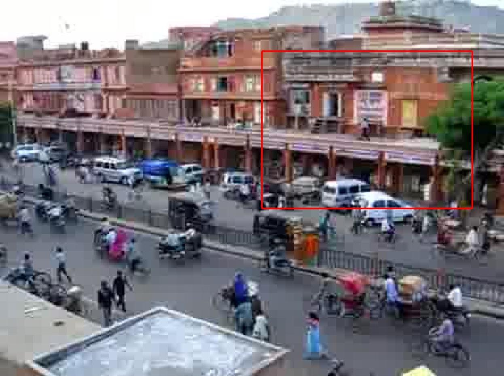
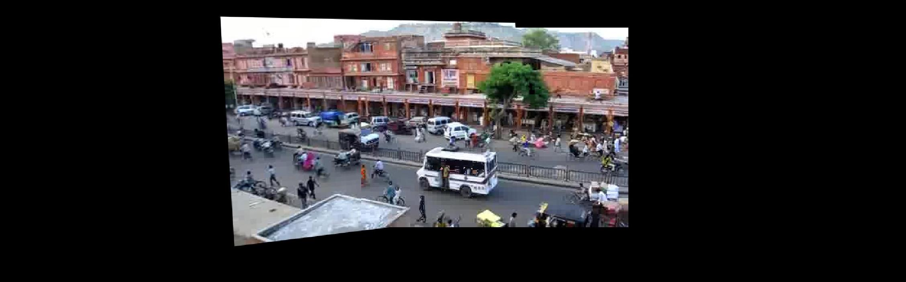
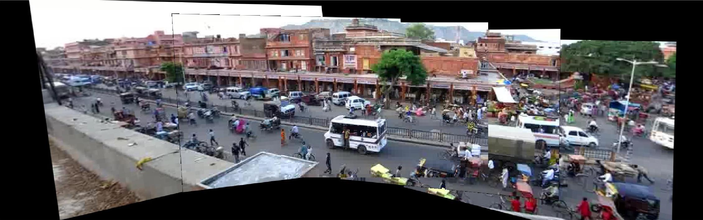
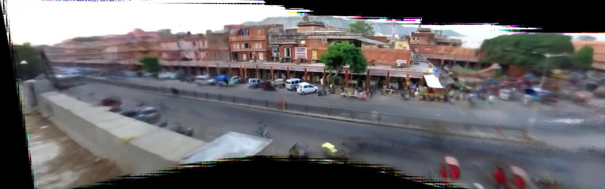

For this part, I used frame 450 as the reference frame, which means that I'll
project all the other frames onto the plane of this frame using a
homography transformation. To illustrate this process, I'm going to project
frame 270 onto 450. First, we have to use the SIFT algorithm to identify the
keypoints in both images. The SIFT algorithm may give us some incorrect
keypoint match pairs, so we'll use RANSAC to simultaneously find the correct
matches and compute a model that best describes these correct matches. To
compute the homography, we use normalized DLT to minimize the error. The
RANSAC algorithm randomly selects 4 homogenous coordinate pairs from frames
270 and 450. Then we normalize these coordinates by scaling them so that
they are roughly unit length and translate them so that they are centered
at (0, 0). Then we compute a potential homography, H^, in the normalized
coordinates using DLT. Then we transform H^ back into the original
coordinates.
Here I show a projection of 4 points from frame 270 onto frame 450. As you
can see, the four corners of the rectangle correspond to the same objects
on both frames, which indicates that the transformation is correct.

After 1000 iterations, I use the best homography (the one that correctly
projects the most points) and project the entire image onto the reference
plane. I using the simple blending method of replacing zero pixels on the
planar surface with non-zero pixels in the projected image. The result is
below.

Part 2: Panorama using five key frames
I do the process outlined above for frames 90, 630, and 810, sequentially.
Since the keypoints in frames 90 and 810 don't have a lot of matches with
keypoints in the reference frame, we project frames 90 and 810 onto frames
270 and 630, respectively, and then project them onto frame 450.

Part 3: Map the video to the reference plane
I do the same to all the frames in the video, first projecting them onto
the closest key frame (either frame 90, 270, 450, 630, or 810) and then
projecting them onto frame 450. I save the homography for each frame for
part 5. For all the video conversions in this project, I use ffmpeg.
Part 4: Create background panorama
To create the background panorama, I take all the aligned frames and I find
the median RGB value for each pixel location. Since we are assuming the
background is static, the median pixel value should result in the background
color. The frames near the beginning and the end were more shaky because of
error in the projection that has propagated, resulting in a blurry effect.

Part 5: Create background movie
To create the background movie, I use the homographies calculated in step 3.
We want to find a projection from the background panorama to the original
frame coordinates, and to do this we use the inverse homography matrix.
Part 6: Create foreground movie
To create the foreground movie, I subtract the background frames found in
the previous step from the original frames taken from the original video.